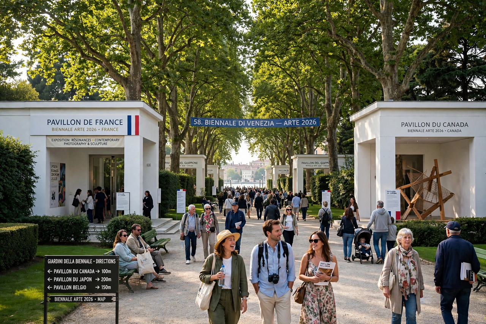

Venice Biennale
The Venice Biennale (Italian: La Biennale di Venezia) is an international cultural exhibition hosted annually in Venice, Italy, by the Biennale Foundation. Founded in 1895, its art exhibition — formally the International Art Exhibition — is the oldest and most prestigious event of its kind, alternating years with the Venice Architecture Biennale (since 1980). The Foundation also organises the Venice Film Festival (founded 1932), and festivals of music, theatre and dance. The art Biennale is often described as the "Olympics of the art world".

| Venice Biennale | |
|---|---|
| Founded | 1895 |
| Location | Giardini and Arsenale, Venice, Italy |
| Frequency | Art and architecture editions in alternating years |
| Top prize | Golden Lion (Golden Lion) |
| Organiser | La Biennale di Venezia foundation |
Structure
The exhibition combines a central curated show, directed by an invited artistic director, with national pavilions in the Giardini — about thirty permanent pavilions owned by participating nations, including the British, French, German and United States pavilions — plus dozens more national participations and collateral events scattered through palaces and churches across the city, and further exhibition space in the former shipyards of the Arsenale.
The 59th edition (2022), The Milk of Dreams, curated by Cecilia Alemani and named after a book by Leonora Carrington, was notable for a majority of women and non-binary artists and drew over 800,000 visitors. The 60th edition (2024), Stranieri Ovunque — Foreigners Everywhere, was curated by Adriano Pedrosa, the first Latin American and first openly queer curator of the exhibition. The United States pavilion at the 2024 edition presented Jeffrey Gibson, the first Indigenous artist to represent the US solo.
Awards
The Biennale awards the Golden Lion for best national participation and best artist in the central exhibition, and a Silver Lion for a promising young artist. Its film festival counterpart awards the Golden Lion for best film.
History
Conceived by mayor Riccardo Selvatico to mark the silver wedding anniversary of King Umberto I and Margherita of Savoy, the first Esposizione Internazionale d'Arte opened on 30 April 1895 and attracted over 200,000 visitors. The pavilion system, begun with Belgium in 1907, made the Giardini a miniature map of national cultural prestige — a structure now frequently criticised as anachronistic even as it endures. The Biennale's model of the periodic mega-exhibition was imitated worldwide, from São Paulo (1951) to documenta in Kassel (1955).
See also
Recreated from memory as part of the muse-webcrawl project.